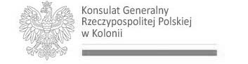
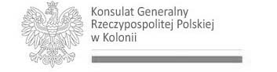

krakowiak
Zespół Pieśni i Tańca

Zespół Pieśni i Tańca Krakowiak e.V. jest stowarzyszeniem miłośników polskiej kultury ludowej.
Nazwa zespołu wywodzi się od narodowego tańca polskiego, pochodzącego ze starego, królewskiego miasta Krakowa, dawnej stolicy Polski. ... czytaj dalej
 

Zespół wywodzi się ze stowarzyszenia Polaków w Niemczech “Lech”, zalozonego w roku 1982 przez pana Władysława Patrzałka. Zespół Pieśni i Tańca Krakowiak e.V. jako odrębne stowarzyszenie pożytku poblicznego został zarejestrowany w 1995 roku.
Zespół składa się dziś z dwóch grup (dorosłych oraz dzieci) i liczy ok.50 osób. Pomimo różnic wiekowych, narodowych czy też zawodowych łączy nas jedna cecha: miłość do tańca i śpiewu. Dzięki temu w zespole panuje istnie rodzinna atmosfera.
Nasz program obejmuje zbiór najpopularniejszych tańców i przyśpiewek z różnych regionów Polski. Charakteryzują nas piękne i kolorowe stroje ludowe, wielobarwne głosy oraz ciekawe układy choreograficzne.
Dumą i przyszłością naszego stowarzyszenia są dzieci, które chętnie uczą sie i kontynuują tradycje naszych pradziadów.
Głównym naszym celem jest kultywowanie polskiego folkloru. Działalność artystyczna, którą prezentujemy na scenie jest sztuką o wielkim ładunku emocjonalnym. Poprzez intensywne treningi wciąż udoskonalamy i poszerzamy nasz repertuar.
Jesteśmy grupą otwartą dla osób, które interesują się współpracą lub wstąpieniem do zespołu.
Zobaczyć można nas na festiwalach, festynach czy też prywatnych imprezach, zarówno polskich jak i wielokulturowych. “Krakowiak” został wpisany na stałe w kalendarze wielu imprez organizowanych przez inne stowarzyszenia. Co roku z niezmierną przyjemnością śpiewamy także kolędy na mszy polskiej w Darmstadt.
Serdecznie zapraszamy na nasze występy oraz próby!!!
Z pozdrowieniami
Zespół Pieśni i Tańca “Krakowiak”

Nasz kierownik Adam jest informatykiem, ale jego prawdziwą pasją jest muzyka. W "Krakowiaku" tańczy, śpiewa i gra na akordeonie. Na gitarze elektrycznej gra w zespole o wszystko mówiącej nazwie "Rockowiak".
Choreograf Artur pochodzi z Belgii, gdzie wychował się w rodzinie polskich społeczników, oddanych działalności polonijnej. Całe dzieciństwo i mlodość spędził na wywijaniu hołubców i strzelaniu bramek w polonijnych zespołach tanecznym nomen omen "Krakus" i piłkarskim nomen omen "Cracovia".
Nasz kierownik Adam jest informatykiem, ale jego prawdziwą pasją jest muzyka. W "Krakowiaku" tańczy, śpiewa i gra na akordeonie. Na gitarze elektrycznej gra w zespole o wszystko mówiącej nazwie "Rockowiak".
Choreograf Artur pochodzi z Belgii, gdzie wychował się w rodzinie polskich społeczników, oddanych działalności polonijnej. Całe dzieciństwo i mlodość spędził na wywijaniu hołubców i strzelaniu bramek w polonijnych zespołach tanecznym nomen omen "Krakus" i piłkarskim nomen omen "Cracovia".
Osoby pragnace wesprzec dzialalnosc naszego zespolu prosimy o wplate darowizny na ponizsze konto bankowe:
Krakowiak e.V.
IBAN: DE95 5085 0150 0027 0235 09
BIC: HELADEF1DAS
Kwota darowizny może zostać odliczona przez darczyńcę od podstawy opodatkowania przy rozliczeniu z urzędem finansowym w Niemczech.
Wplaty zostana przeznaczone wylacznie na cele statutowe zespolu, m.in. na zakup strojow ludowych, w ktorych wystepujemy.
Dziękujemy za wsparcie!!!
Adres korespondencyjny:
Krakowiak e.V.Zapraszamy do spotkania w czasie naszych prób:
Das KochschulhausZainteresowane osoby prosimy o uprzedni kontakt telefoniczny lub mailowy.